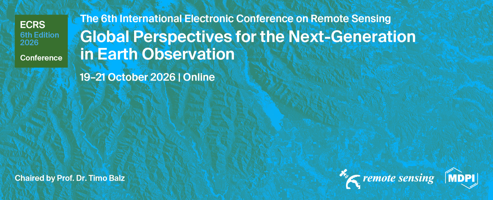
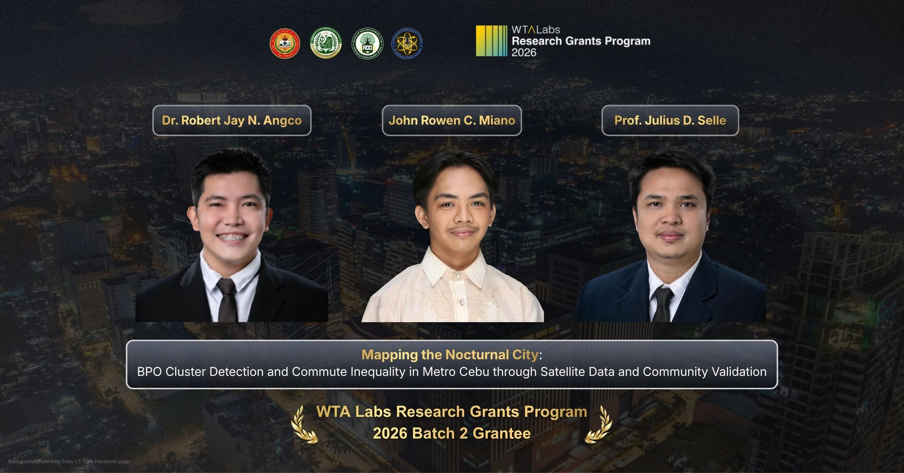
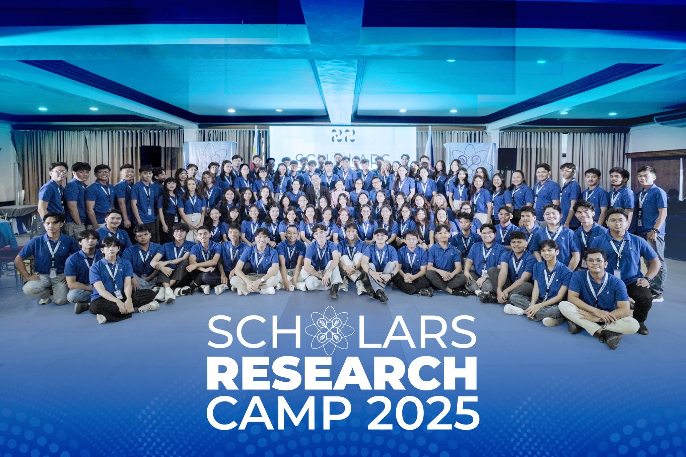
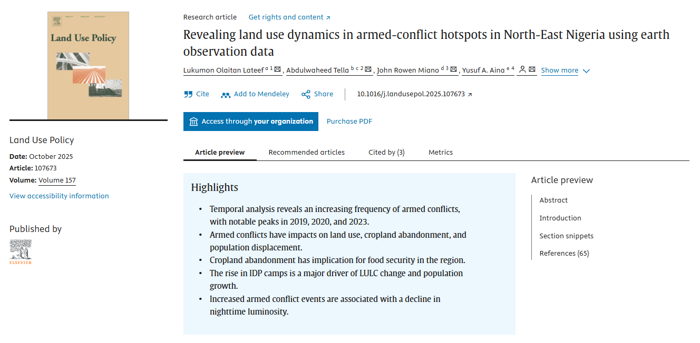
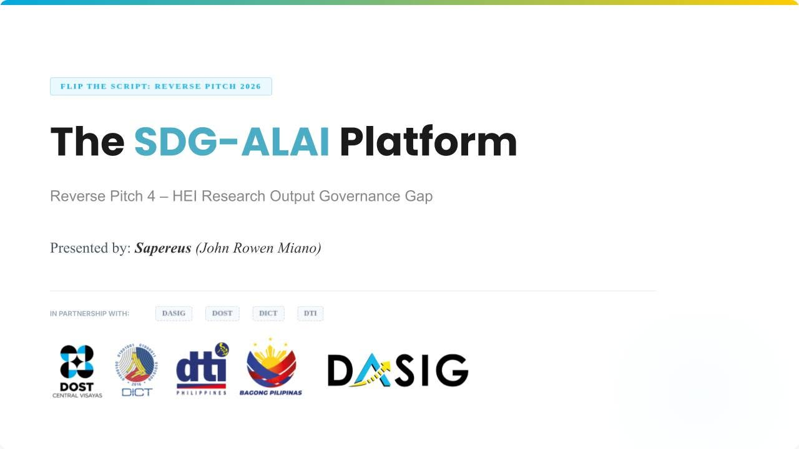
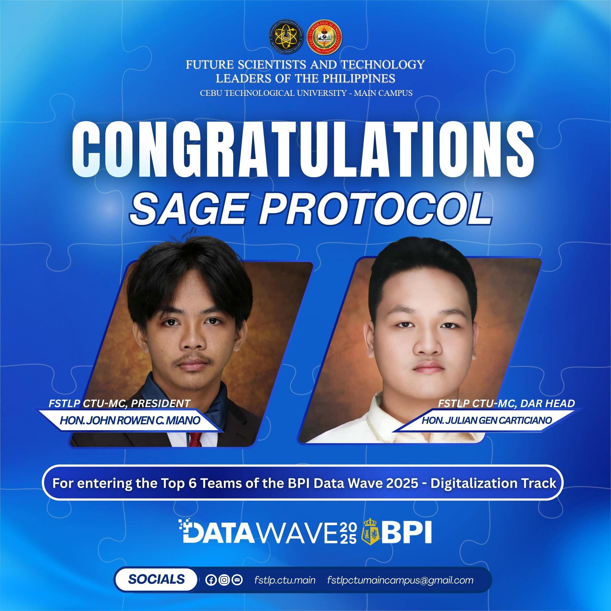
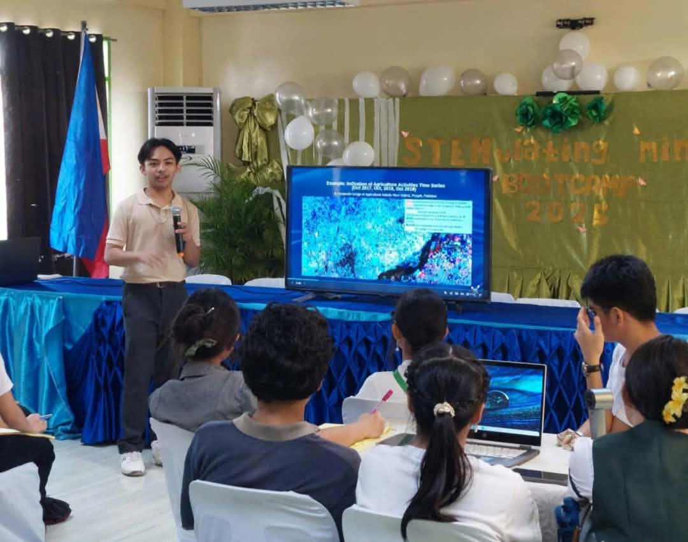
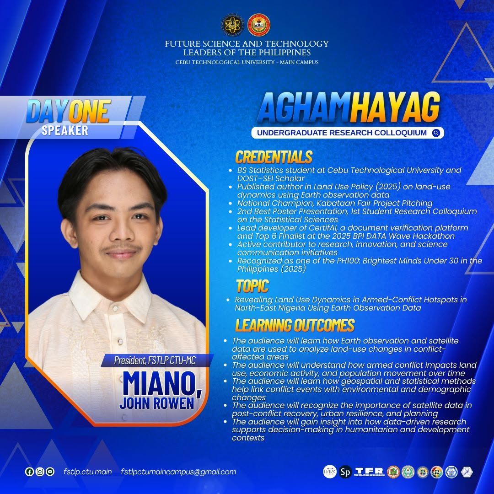

Mapping the Nocturnal City
As principal investigator of a WTA Labs grant, I’m detecting BPO clusters and measuring commute inequality in Metro Cebu, then checking the results with the community.
Hello! I am Rowen, a BS Statistics student at Cebu Technological University and a DOST-SEI S&T scholar. I work at the intersection of statistics and geospatial analytics to turn data into insights for real-world challenges. I am currently a Principal Investigator (Research Grantee) at WTA Labs: Center for Urban Research, developing a VIIRS-Sentinel-2 fusion model for nocturnal urban land use classification across Metro Cebu. Beyond research, I lead student communities and organize programs that make science more accessible, collaborative, and impactful.



As principal investigator of a WTA Labs grant, I’m detecting BPO clusters and measuring commute inequality in Metro Cebu, then checking the results with the community.

We tracked land use change across North-East Nigeria with satellite data and published the findings in Land Use Policy.
Read the paperI used Gaussian process regression to fill gaps in satellite chlorophyll-a data over space and time, with uncertainty estimates for each value.
I developed and content-validated a tool that shows how well student projects line up with the Sustainable Development Goals.
I developed and content-validated a tool to measure statistical software engagement of quantitative-oriented students.
This study looks at when the Geeta distribution’s parameters can be recovered reliably from word frequency data.
Features about my work and the initiatives I lead, as published by Cebu Technological University.
Sapereus (formerly Sage Protocol) is an independent research venture that applies computational methods to solve problems across different fields. It is my passion and purpose project, and the home for my research initiatives.
For me, research is about turning knowledge into something that helps communities grow, adapt, and move forward. Through Sapereus, I work toward a Philippines where science and technology guide everyday decisions, inspire young people, and shape a better future for all.




I’m open to research collaborations, speaking invitations, and conversations about student research and science communication. Write to johnrowenmiano@gmail.com.